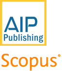

The best presenter on SMIC 2022
| Field | Code of Presenter | Name | Affiliation | Title |
|---|---|---|---|---|
| Physics | ABS-102 | Ishfahani Rusyda | Universitas Gadjah Mada | Constraining f(R)f(R) Gravity Models with The Late-Time Cosmological Evolution |
| Physics Education | ABS-43 | Siti Masfuah | Universitas Muara Kudus | Content Validity of Self-Assessment to Measure Technological Pedagogy Content Knowledge (TPACK) College Students |
| Biology Education | ABS-33 | Ika Lestari | Universitas Negeri Jakarta | Learning Loss Analysis on Science Literacy for Elementary School Students in the Covid-19 Pandemic |
| Biology | ABS-213 | Aryanny Binti Nasir | Universiti Teknologi Malaysia | Fabrication and Characterization of Cellulose Acetate Nanofiber Derived from Rice Husk as Potential Wound Dressing Material |
| Mathematics | ABS-14 | Suyono | Universitas Negeri Jakarta | Asymptotic Properties of Alternating Renewal Process with Instantaneous Rewards |
| Mathematics Education | ABS-193 | Yurniwati | Universitas Negeri Jakarta | Web-based Pedagogical Content Knowledge for Teacher Professional Development: A Preliminary Study |
| Computer Science | ABS-171 | Muhammad Eka Suryana | Universitas Negeri Jakarta | Weakness of Active Contour Algorithm in Finding Wound Perimeter on Image Dataset and Its Solution |
| Chemistry Education | ABS-201 | Ella Fitriani | Universitas Negeri Jakarta | Australian and Indonesian Primary Students’ Engagement and Understanding of STEM Using the Markerspace: A Comparative Study |
| Chemistry | ABS-97 | Zarani Mat Taher | Universiti Teknologi Malaysia | Optimization, Scaling-up and establishment of herbal processing technology for the production of bioactive extracts from selected Malaysia medicinal plant |
Congratulations to all the best presenters, we will send a certificate of appreciation to your email
Presented and accepted papers will be published in the American Institute of Physics (AIP) Proceeding indexed by Scopus.
Emerging Post Pandemic Trends of Research and Education in Mathematics and Sciences
Covid 19 brings dramatic changes in all sectors of life. Education has changed with the distinctive rise of e-learning. Learning experiences during the pandemic are carried out with the concept of digital education undertaken on many platforms. Higher education is forced to accelerate the implementation of this online learning style. Although universities have e- learning ecosystems in place, yet these environments are mostly designed for blended learning. Predictions about movement in the post pandemic time, whether implementing the pre-existing models of blended learning or moving into a flexible and agile learning ecosystem in line with 5th industrial revolution are still a debatable issue. Constraints faced while learning from home, will provide experience in the implementation of post-pandemic education.
Education hasn’t been the only field impacted by pandemic. Economy, health and human well-being were also suffering from it. research is needed to make feasible concrete ways of surviving. Unfortunately, the research pattern is disrupted due to the need of effort in being able to live side by side with the virus. Unpredicted noticeable huge innovations even appear which were never thought of before.
Science, mathematics and education play an important role in adapting to the new world in the post pandemic era. The third Science and Mathematics International Conference (SMIC) aims to bring together academics, scientists, students, and practitioners to share and discuss theoretical and practical knowledge, new trends and application in those fields related to post pandemic issues. The previous 1st and 2nd conference has brought huge success in aligning more than 6 countries participants in the events and delivering to international reputable book as well as proceeding.
3rd SMIC 2022 will be held on 7 September by Online Mode . The conference definitely provides ideal academic platform for researches to present their latest work in the emerging post pandemic trends of research and education in Mathematics and Sciences.
IMPORTANT DATES
1. Abstract submission deadline
30 July 2022
2. Abstract acceptance
13 August 2022
3. Early bird payment deadline
5 August 2022
4. Regular payment deadline
20 August 2022
5. Paper Submission deadline
5 September 2022
6. The Conference
7 September 2022
7. Paper acceptance
14 October 2022
8. Paper payment deadline
31 October 2022
9. Paper Review
15 October - 19 November 2022
10. Paper submission to AIP
19 November 2022
11. Predicted paper publish
January 2023
Conference Scope
Physics
- Energy
- Theoretical Physics
- Material Sciences
- Geophysics
- Nuclear Physics
- Instrumentation Physics
- Medical Physics
- Computational Physics
- Environmental Physics
- Physics Education
Chemistry
- Physical Chemistry
- Analytical Chemistry
- Organic Chemistry
- Environmental Chemistry
- norganic Chemistry
- Theoretical and Computational Chemistry
- Catalysis Process
- Chemistry Education
Biology
- Biotechnology/Microbiology
- Biochemistry
- Botany
- Environment/Ecology/ Biodiversity
- Zoology
- Biology Education
- Bioinformatics
Mathematics
- Geometry
- Analysis
- Algebra
- Statistics
- Computer science
- Mathematics Education
Computer Science
- Artificial Intelligent
- Network Security
- Neural Network
- Learning Machine
- GIS (Geographic Information System)
- Information System
- Expert System
KEYNOTE SPEAKERS

Prof. Neil Dodgson, PhD
ICT
Computer Graphics Department
Victoria University of Wellington
New Zealand

Ong Yann Shiou, PhD
SCIENCE EDUCATION
Natural Sciences and Science Education
Department
Nanyang Technological University
Singapore

Prof. Dr. Muktiningsih, M.Si
CHEMISTRY
Chemistry Education Department
Universitas Negeri Jakarta
Indonesia

Prof. Dr. Hesham Ali El-Enshasy
BIOPROCESS
ENGINEERING
Bioprocess Engineering Department
University of Technology Malaysia
Malaysia
WORKSHOP SPEAKERS
The workshop will be conducted on 27 August 2022 using a hybrid method. The venue will be at Hasjim Asjarie Building, Faculty of Mathematics and Natural Sciences, Universitas Negeri Jakarta, Indonesia. Workshop participants are limited to 30 offline and 20 online participants.
Fauzan Khairi Che Harun, PhD
DESIGN THINKING
University of Technology Malaysia
Malaysia
Saturday, 27 August 2022
08.00- 12.00, Jakarta time

Dr. Bambang Heru, M.Si
BIG DATA ANALYSIS
Universitas Negeri Jakarta
Indonesia
Saturday, 27 August 2022
13.00- 17.00, Jakarta time